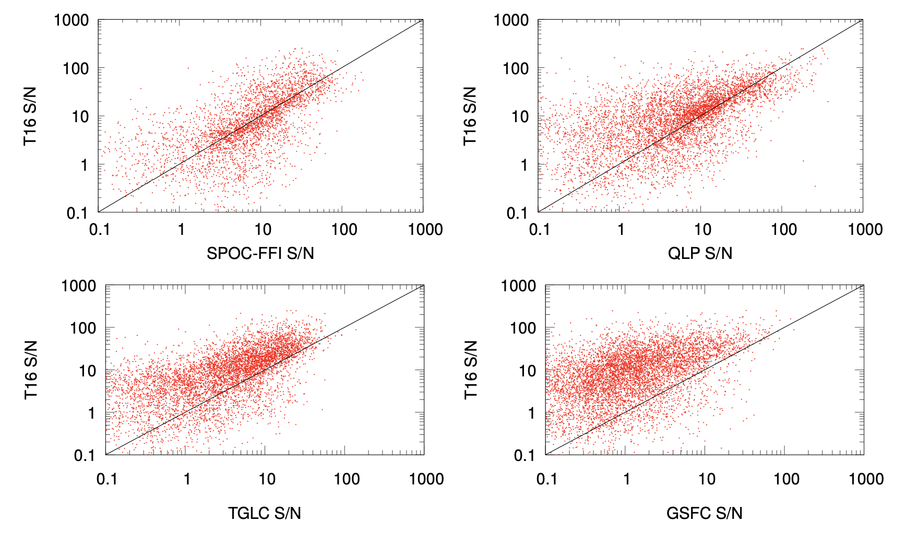
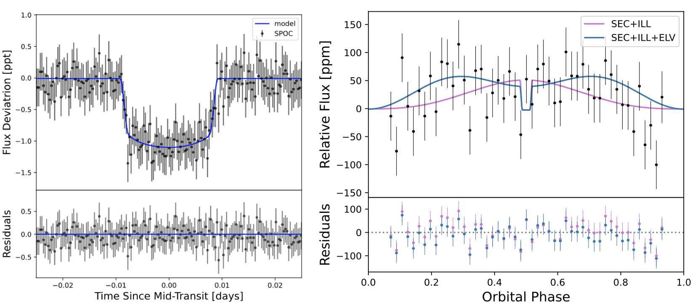
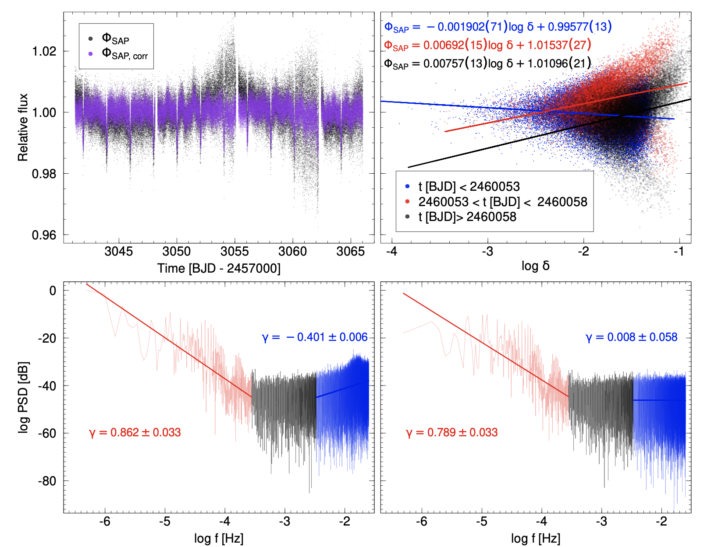

Welcome TESS followers to our latest news bulletin!
This week, we are looking at three recent papers from the archive. Enjoy!
The T16 Project: Image Subtraction Light Curves from TESS Cycle 1 Full-Frame Images for Stars with T < 16 (Hartman et al. 2025) :
TESS Full Frame Images (FFI) lightcurves significantly enhance the mission's scientific value by enabling investigations of tens of millions of stars not included in the primary target list. Having multiple processing methodologies available for the same underlying dataset improves the likelihood of detecting subtle astronomical signals and offers researchers important verification options across different reduction techniques. Hartman et al. (2025) present results from the T16 Project aimed at extracting FFI lightcurves by utilizing image subtraction photometry to stars brighter than T = 16 mag. The authors have generated nearly 84 million light curves for approximately 56.4 million stars observed in TESS Cycle , providing both unprocessed and systematics-corrected versions to the scientific community. The project extends previous work by the Cluster Difference Imaging Survey by broadening its scope to encompass all sufficiently bright stars in the Gaia DR2 catalog. Hartman et al. (2025) employ aperture measurements on subtracted images at three different diameter settings (1.0, 1.5 and 2.25 pixels) utilizing the corresponding Gaia positions. For systematic error removal, the authors implement two complementary approaches: a spline-based technique to handle external parameters and a trend filtering algorithm. When evaluated against comparable FFI datasets, the detrended T16 light curves demonstrate lower median absolute deviation for most targets: approximately 78% compared to QLP KSPSAP, 70% versus SPOC-FFI PDSCAP, 86% against calibrated TGLC aperture measurements, and 43% relative to GSFC-ELEANOR-LITE corrected flux data. Hartman et al. (2024) validated the T16 light curves using known transiting planet candidates, successfully recovering signals for 2,639 out of 2,971 targets in their dataset. The respective measured transit depths closely match established values, with a typical ratio of 91% between T16 and previously reported measurements. The authors’ signal-to-noise analysis showed that the T16 light curves provided better transit detection capability for 63% of candidates compared to QLP, 45% versus SPOC-FFI, 77% against TGLC, and 86% relative to GSFC data. For long-period variable stars like Cepheids, the authors argue that the unprocessed T16 lightcurves outperform alternatives by better preserving amplitude information. The Cycle 1 T16 dataset has been made accessible through NASA's specialized archive, further contributing to the scientific advancements enabled by the TESS FFI photometry.
TOI-6324b: An Earth-Mass Ultra-Short-Period Planet Transiting a Nearby M Dwarf (Lee et al. 2025) :
Ultra-short-period planets are typically defined as being smaller than about 2 REarth and having orbital periods of less than 1 day, effectively putting them right next to their host stars. As such, these planets experience extremely high stellar irradiation and are expected to be the rocky remnants of much larger planets. Lee et al. (2025) report the confirmation of the latest such planet, TOI-6324b. The target was observed by TESS at short cadence in Sectors 6, 17, 18, 24, 58, 77, and 78, and produced periodic transit-like signals with a depth of about 0.001. The host star is a nearby M dwarf (distance of ~20 pc) with a mass of 0.27 MSun, radius of 0.29 RSun, effective temperature of ~3,250 K, and metallicity [Fe/H] of -0.32. The planet has an orbital period of about 6.7 hours, orbital inclination of about 75 degrees, and an equilibrium effective temperature of 1,216 K. The authors note that TOI-6324b is the most Earth-like ultra-short-period planet to date, with a radius of 1.06 REarth and mass of 1.17 MEarth. The latter was measured with the Keck Planet Finder spectrograph, providing precise constraints on the planet’s composition. Utilizing these, Lee et al. (2025) investigated the internal composition of the planet using a three-layered interior model and found a best-fit solution for the core mass fraction of 27±37%, comparable to that of the Earth and consistent with other ultra-short-period planets. Additionally, the authors argue that the planet's close proximity to its star (at about 24% from the Roche limit) suggests it may be significantly tidally distorted, potentially inflating its volumetric radius by ~5% compared to its transit radius. In turn, this would significantly change the core mass fraction, potentially decreasing it to 3±40%. From the seven available sectors of TESS data, Lee et al. (2025) also find a potential signature of optical phase curve variation with an amplitude of 42 ± 28 ppm. The authors calculate an Emission Spectroscopy Metric of 25 for TOI-6324b and point out that it is an excellent target for JWST phase curve and secondary eclipse observations, which could provide insights into the surface characteristics of the planet. Combining TESS observations with spectroscopic measurements, Lee et al. (2025) were able to confirm TOI-6324b – the latest addition to the population of ultra-short-period planets.
Detection of a peculiar noise type in the TESS "fast" light curves (Kalman et al. 2025) :
Noise is a typical component of TESS lightcurves, be it astrophysical, instrumental or otherwise. ‘White’, ‘red (pink)’, and ‘blue’ noise, as defined by their distinct power spectra density, are commonly-encountered undesired signals that need to be taken into account before investigating the signals of interest. Kalman et al. (2025) present the detection of a high-frequency noise component in the short-cadence photometry from TESS, examine its source and discuss mitigation strategies. In particular, the authors study the 20-sec cadence TESS SAP lightcurve of WASP-167, a transiting gas giant observed in Sector 64. Kalman et al. (2025) compute the power spectral density of the lightcurves and identify three distinct frequency regimes: low-frequency (timescales >1 hour), medium-frequency, and high-frequency (timescales <5 minutes). Utilizing
linear model fits, they measured a corresponding exponent γ = 0.862 ± 0.033 in the low-frequency domain, consistent with the expected red noise commonly found in astronomical observations. In the high-frequency domain, the authors obtained γ = -0.401 ± 0.006, indicating the presence of blue noise (γ ≈ -1), which is relatively rare in natural phenomena. Kalman et al. (2025) demonstrate that applying a jitter correction can mitigate this high-frequency noise component, suggesting that sub-pixel sensitivity variations on the CCD are responsible for the blue noise. The authors identify three distinct patterns in the data corresponding to different time periods (time < BJD 2460053, BJD 2640053 < time < BJD 2460058, and time > BJD 2460058), with corresponding ΦSAP-log δ slope ranging from -0.001902 to 0.00757, indicating that correlated noise levels change throughout observations. The authors detected similar high-frequency features in TESS lightcurves from WASP-121 and KELT-25, but not in HD 1897333, suggesting the feature is neither unique to WASP-167 nor universal in all short-cadence data. Kalman et al. (2025) argue that while similar patterns can potentially be the result of planet-specific processes such as atmospheric lightning, the observed blue noise is unlikely to have an astrophysical origin.

Fig. 1: Taken from Hartman et al. (2024). Comparison between the SN(pink) from the T16 Project lighcurves and those from SPOC-FFI (upper left), QLP (upper right), TGLC (lower left), and GSFC-ELEANOR-LIGHT (lower right).

Fig. 2: Taken from Lee et al. (2025). Left panel: phase-folded TESS lightcurve for the ultra-short-period planet TOI-6324b, along with the best-fit transit mode. Right panel: same as left panel, but binned and showing the entire orbital phase, highlighting potential phase curve variations.

Fig. 3: Taken from Kalman et al. (2024). Upper left panel: 20-sec cadence TESS lightcurve of WASP-167. Upper right panel: Corresponding ΦSAP as a function of the distance to the photocenter for the three sections of the lightcurves indicated in the legend. Lower panels: power spectra density for ΦSAP (left) and ΦSAP, corrected (right).